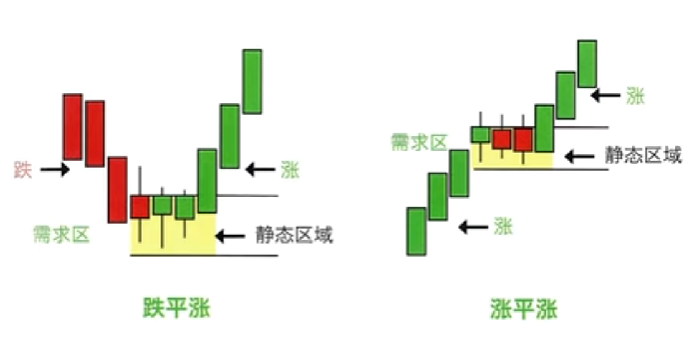
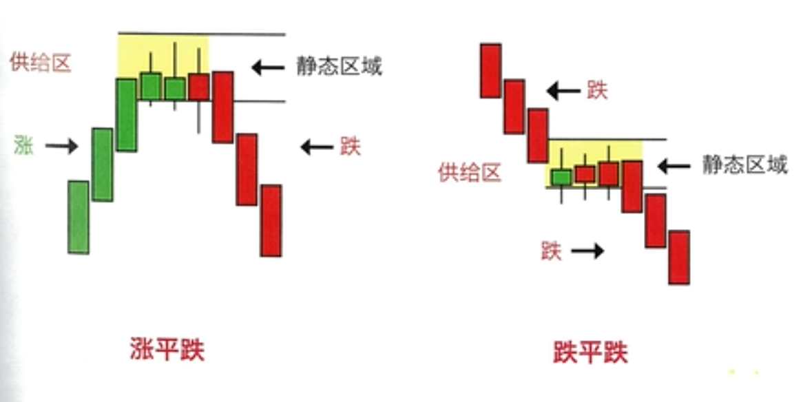

SMC
PA（Price Action）
IB（Inside Bar）
OB（Outside Bar）
PB（Pin Bar）
Support (支撑)
Resistance（阻力）
假设这个市场中存在一个机构，拥有几个亿的资金，那么他会怎么操作才能获取最大的利润，
首先必须要有足够的对手盘，主要通过突破关键位成交散户的止损单和突破单来增加流动性
机构如果想做多，会先买入一些空单，将价格打下去（增加流动性），并在较低的位置开多单，随后当价格再次拉升时，先卖出部分获利订单，并再次将价格打下去，同时解套一开始的空单（成本回收），这样就形成了W底
总之就是想办法获取更多的订单（流动性），为之后的拉升做准备
概念
流动性：订单（包括未成交的订单）、或者说钱
流动性池：待成交订单大量堆积的区域，一般就是大周期的波段高低点（有大量的止损单以及未入场者的突破单）
溢价区、折价区：已做多为例，高低点往上就是溢价区，往下就是折价区
术语
BSL（买方流动性 Buy Side Liquidity）
SSL（卖方流动性 Sell Side Liquidity）
EQH（等高点 Equal Hight Point）
EQL（等低点 Equal Low Point）
S2B（Sell To Buy）
B2S（Buy To Sell）
BMS、BOS、MSB（突破结构 Break in Market Structure 、 Break Of Structure 、 Market Structure Break）
SMS、MSS、CHoCH、MS（反转结构 Shift in Market Structure、 Market Structure Shift 、Change Of Character、Momentum Shift）
OB（order Break 供应区 需求区 价格强势上涨突破结构前的最后一根阴线，价格大幅下跌突破结构前的最后一根阳线）
供求关系
当供求平衡时，价格上下波动（吸筹、建仓区）
当供求失衡时，价格就往一个方向走
买区、卖区
供应区（Supply），入场做空的价格区，简称“卖区”，强势下跌K线的前一根阳线；
需求区（Demand），入场做多的价格区，简称“买区”，强势上涨K线的前一根阴线；
卖区要求（买区同理）
- 卖区K线（Bose Candle）必须有实体；
- 必须被被下一根强势K线（Breakout Candle 简称：BO）吞没；
- 卖区K线的最低价必须BO的实体范围内；
机构订单原理
静态K线，表示在此区域供求关系基本平衡，订单在此区域有所积累，形态上表示为实体部分小于振幅的50%；
动态K线，表示在此区域供求关系不平衡，订单在此区域有所消耗，形态上表示为实体部分大于振幅的50%；
需求区

供应区
